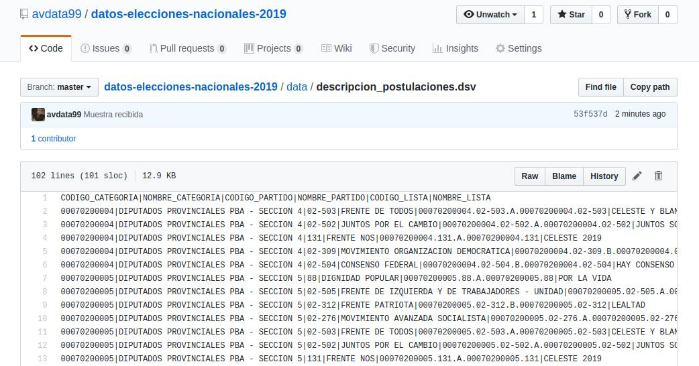
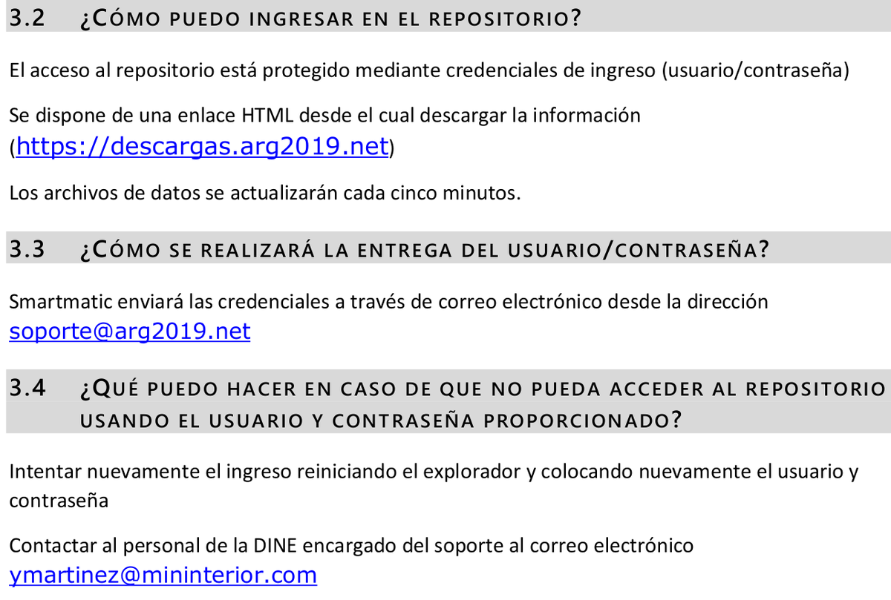
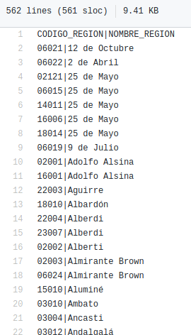
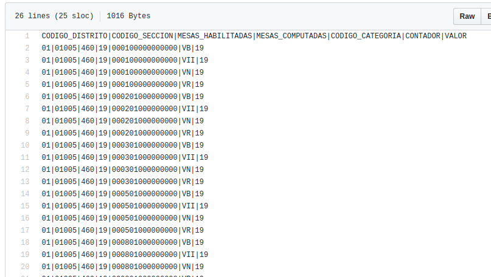
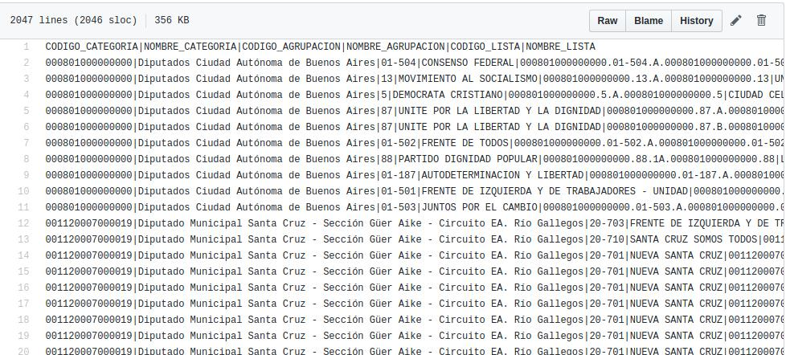
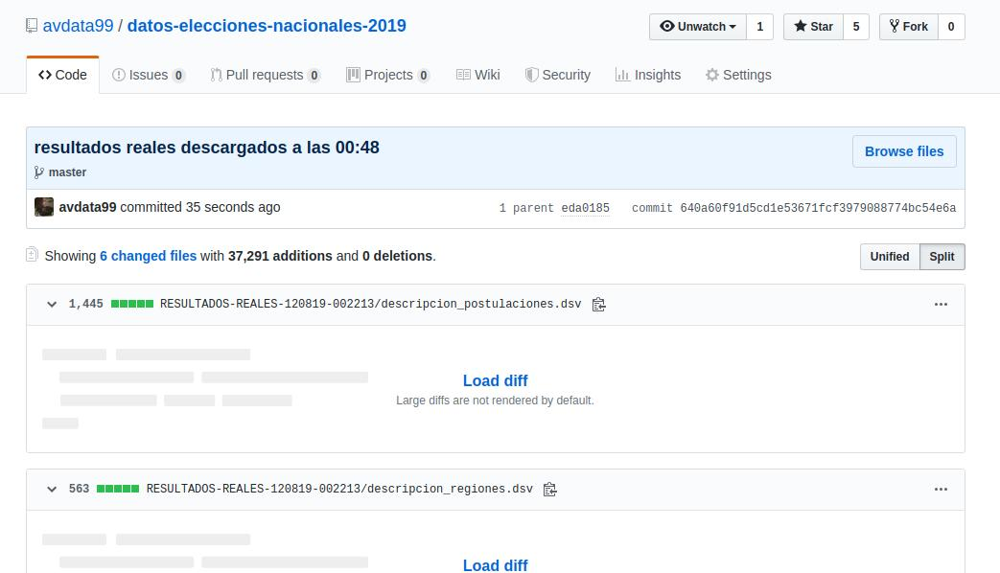

Muestra de datos de la DNE para preparar las PASO 2019
Originalmente publicado como hilo en Twitter.
Antes de cada elección, la autoridad electoral suele compartir con quienes lo necesitamos (medios, organizaciones, equipos técnicos) una muestra de cómo van a publicarse los datos el día del comicio, junto con las URLs donde estarán disponibles, para que tengamos tiempo de preparar nuestros sistemas.
Recibí la muestra de los datos de la Dirección Nacional Electoral. Los subo a un repositorio público para que todos comiencen a preparar sus sistemas para leer los resultados en las PASO. Este es el formato en que se podrán leer los datos ese día.
https://github.com/avdata99/datos-elecciones-nacionales-2019

Leo el PDF que documenta el formato y no puedo entender por qué siguen eligiendo algo tan feo. Preferiría un JSON en lugar de ese DSV y, lo que más jode, no hay una URL única para los datos: son archivos comprimidos con nombres distintos que se van subiendo. Funciona, pero sigue pareciendo viejo.
Actualización: cambios menores en los datos. En el repo:




Update con datos reales:

Comentarios
Comments powered by Disqus